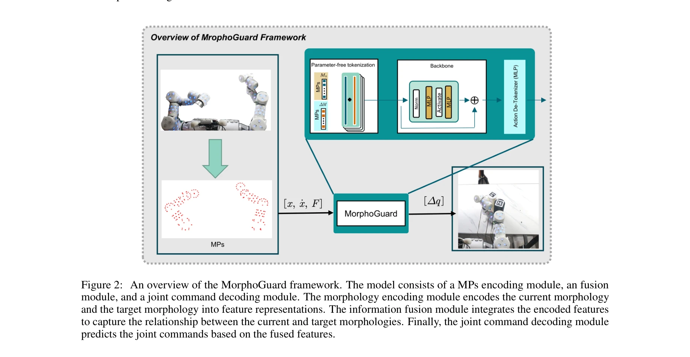

Essence

Figure 1: Schematic of morphology-based whole-body motion control (MorphoGuard). (A) An example of a robot
로봇의 형태학적 표현을 기반으로 Material Point Method를 활용하여 전신 제어 네트워크 MorphoGuard를 제안. 복잡한 다중 접촉 조합을 명시적으로 관리하며 1cm의 접촉점 관리 오차를 달성.
저자: | 날짜: 2026-04-02 | URL: https://arxiv.org/abs/2604.01517
Figure 1: Schematic of morphology-based whole-body motion control (MorphoGuard). (A) An example of a robot
로봇의 형태학적 표현을 기반으로 Material Point Method를 활용하여 전신 제어 네트워크 MorphoGuard를 제안. 복잡한 다중 접촉 조합을 명시적으로 관리하며 1cm의 접촉점 관리 오차를 달성.

Figure 2: An overview of the MorphoGuard framework. The model consists of a MPs encoding module, an fusion
Figure 2: An overview of the MorphoGuard framework. The model consists of a MPs encoding module, an fusion
총평: 복잡한 다중 접촉 조합을 관리하는 로봇 전신 제어의 미해결 문제를 형태학적 표현과 Material Point Method의 창의적 결합으로 우아하게 해결했으며, 높은 정확도의 실험 결과를 보여준다. 다만 단일 플랫폼 실험과 일반화 가능성에 대한 검증이 보완되면 더욱 강력한 기여가 될 것으로 기대된다.